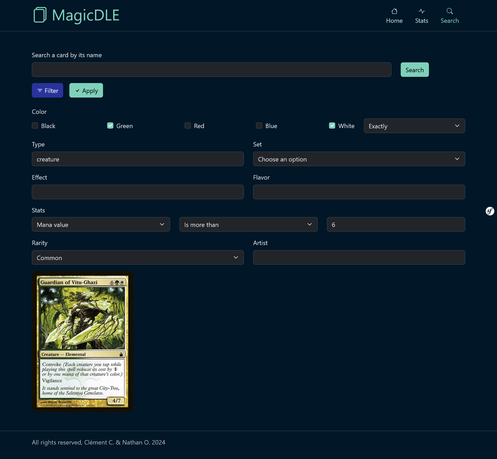

Magicdle
- Symfony
- Doctrine
- PHP
- MariaDB
Le projet
Ce projet a été réalisé durant ma troisième année de BUT informatique. Le sujet étant libre, mon collègue et moi avons décidé de développer un site web reprenant le principe du Wordle du New York Times, jeu où l'on doit deviner un mot à l'aide d'indices basés sur les mots déjà essayés, mais en remplaçant les mots par des cartes du jeu de cartes à collectionner Magic the Gathering. En plus de la page dédiée au jeu, le projet disposait d'un moteur de recherche permettant de rechercher des cartes, une fonctionnalité complétant bien le principe du jeu, ainsi que d'autres pages plus cosmétiques telles qu'une page d'accueil affichant une sélection de cartes aléatoires et une page de statistiques donnant diverses statistiques liées au site et aux cartes.
The project
This project was developed during my third year of BUT. Since we could pick our own subject, me and my colleague decided to develop a website based on the New York Times Wordle game, where you try to guess a word through hints based on your previous attempts, but replacing the words with Magic: The Gathering cards. On top of the game page, the project also came with a search engine to help with searching cards, a useful tool to have considering the nature of the game, alongside more cosmetic pages such as a homepage displaying a selection of random cards and a stats page displaying various stats related to the cards and site.
Ma contribution
Mon collègue et moi avons effectué la conception de la base de données du projet ensemble. J'ai ensuite développé une partie de l'algorithme de recherche de carte utilisé à travers tout le site, mais la plus grande partie de ma contribution réside dans mon développement de toute la partie jeu du site : c'est moi qui me suis occupé de rendre son backend fonctionnel, de la génération d'une nouvelle carte à deviner chaque jour à l'affichage des essais du joueur et des indices qui en découlent.
My contribution
My colleague and I worked on designing the project's database together. I then developed part of the card searching algorithm used throughout the entire site, but my main contribution was my development of the entire game part of the project: I worked on 100% of its backend functionality, from the generation of a new card to guess every day to the site's displaying of previous attempts and the hints that came with them.

Exemple de code
Ci-contre un extrait du code utilisé pour générer une carte à deviner chaque jour :
A chaque chargement de la page, le site vérifie si la date a changé depuis la dernière visite de l'utilisateur ou non afin de pouvoir vider les données des essais du jour précédent, si elles existent. L'aléatoire du site est seedé en utilisant la date du jour : ainsi, différentes personnes utilisant le site le même jour devront essayer de trouver la même carte, et le site continuera de générer une nouvelle carte à trouver chaque jour ad vitam eternam sans action de ma part.
Code example
Here's an excerpt from the code used to generate a new card to guess every day:
Each time the page loads, the site checks to see if the date has changed since the user's last visit or not, and then empties the data from the previous day's attempts, if any. The site's randomness is seeded using the current day's date: that way, different people using the site on the same day will have to guess the same card, and the site will keep generating a new card to guess every day ad vitam eternam with no input necessary from me.